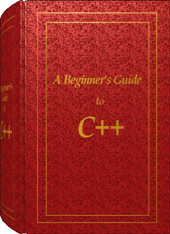

|

|
A Beginner's Guide to C++
C++ è un linguaggio orientato agli oggetti basato sul C. Questo tutorial descrive
l'evoluzione del C in C++. Quindi, il lettore dovrebbe avere familiarità
con i fondamenti del C. Aver già esperienza nella costruzione di software orientato agli
oggetti non è richiesto, ma è comunque utile.
Il programmatore C++ già esperto potrà invece usare queste pagine come
una guida rapida.
Clicca sul libro...
|